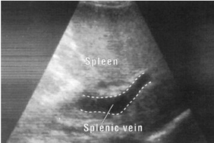
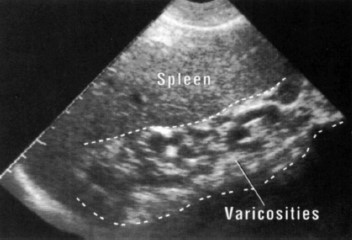

Schistosomiasis
Schistosomiasis is one of the most common parasitic infections in humans. Hepatic schistosomiasis is caused by Schistosoma mansoni, S. japonicum, S. mekongi, and S. intercalatum. Hepatic involvement by S. mansoni is particularly severe. The ova reach the liver through the portal vein and incite a chronic granulomatous reaction
Clinical presentation
The granulomatous reaction occludes the terminal portal vein branches, leading to;
- Presinusoidal Portal hypertension
- Splenomegaly
- Varices
- Ascites
ultrasound features
- Widened echogenic portal tracts, sometimes reaching a thickness of 2cm. The porta hepatis is the region affected most. Initially the liver size is enlarged. As the periportal fibrosis progresses, however, the liver becomes contracted, and the features of portal hypertension prevail
- The splenic veins may be enlarged and if there is portal hypertension, there is usually splenomegaly.
- An increase in collateral circulation may develop around the splenic hilus and along the medial edge of the liver. This is seen as tortuos, echo-free structures which must be distinguished from fluid filled bowel
- Periportal fibrosis may be either due to schistosoma mansoni or schistosoma japonicum

Figure 1.

Figure 2.

Figure 3.